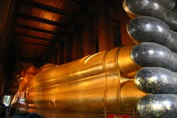
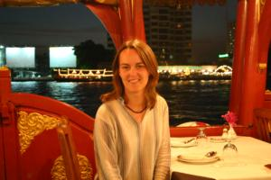

Le 27 décembre 2004,
Nous nous sommes réveillés comme des fleurs, tard dans la matinée, sans nous douter le moins du monde de ce qui s’était passé la veille, dans le sud de l’Asie. Insouciants, nous partons nous promener dans la ville de Bangkok tranquillement. La seule chose sortant de l’ordinaire que nous voyons, c’est l’absence de notre petite vendeuse de jus d’oranges pressées, alors qu’elle est tous les jours à son poste à nous accueillir avec de grands sourires. Elle nous apprend le lendemain qu’elle était scotchée devant sa télévision et au téléphone toute la journée afin de savoir si ses amis, qui vivent dans le sud de la Thaïlande, étaient en bonne santé. Heureusement, tout va bien pour eux. Ils ont vu arriver le raz de marée, se sont mis a courir de toute leur force et ont réussi à se mettre à l’abri à temps...
Enfin, tout ça, nous ne le savons pas encore... Ce que je trouve extraordinaire, c’est qu’absolument rien dans la journée paisible que nous avons vécu, nous a mis la puce a l’oreille sur une éventuelle catastrophe qui aurait eu lieu non loin de là. Le petit-fils du roi de Thaïlande a même été l’une des nombreuses victimes, ça aurait pu faire beaucoup plus de bruits dans la ville... Nous n’avons vraiment rien remarqué d’anormal durant toute cette journée. Nous ne l’avons appris que le soir en allant sur Internet et en prenant connaissance de la tonne de mails envoyés par nos proches.
 Bref, je reviens à ma promenade dans Bangkok, alors que nous ne sommes encore au courant de rien... Nous visitons des temples magnifiques dont l’un renfermant un gigantesque bouddha couché, le plus grand de toute la Thaïlande, mesurant a peine 46 mètres de long et 15 mètres de haut ! Nous poursuivons notre tour avec la visite du Grand Palais contenant, entre autre, un superbe bouddha d’émeraude. Malgré tout, à côté de l’imposant bouddha vu quelques instants plus tôt, ce dernier parait minuscule ! Notre route continue par la traversée d’un sympathique marché d’amulettes de toutes sortes. Nous nous perdons dans les petites ruelles adjacentes et nous nous retrouvons parmi des familles de gens, quasiment dans leur maison vu l’étroitesse des rues. Bientôt, nous apercevons de l’eau sous nos pieds, nous sommes au-dessus du fleuve, retenus juste par quelques planches en bois !
Bon, notre ventre commence à gargouiller sec. Il est 16 heures et nous n’avons toujours pas mangé... Nous dégotons un superbe restaurant au bord de la rivière où la nourriture est un délice ! Ca fait du bien de se poser un peu après cette longue marche. Décidés à ne plus utiliser nos jambes, notre nouveau moyen de transport sera le bateau-taxi maintenant. Sans savoir réellement où nous allons, nous prenons un ticket maximal et nous voguons à travers les flots, le vent dans les cheveux...
 En passant, nous voyons qu’il est possible de se faire un dîner-croisière sur le fleuve. Allez, nous partons nous renseigner. Ils nous annoncent tout d’abord que c’est complet pour ce soir. Quelle déception ! Moi qui avais tellement envie de me faire un dîner en amoureux sur un bateau... Et puis, finalement, il reste une place sur une table du milieu. Parfait, nous sautons sur l’occasion ! Il est déjà 18 heures et le bateau part a 19 heures. Il n’y a plus qu’à attendre ! Nous embarquons à bord d’un magnifique bateau tout en bois, formidablement décoré... Je suis aux anges ! Ca y est, il quitte le quai et les premiers plats affluent. Le seul problème, c’est que nous avons mangé tard ce midi et que nous n’avons pas forcément très faim. Mais vu la qualité des plats, nous ne pouvons pas résister et mangeons presque tout. Nous choisissons un menu "Thaï" et un menu "De la Mer" histoire de pouvoir goûter à tout ! Quand nous voyons arriver le panier de crabes, langoustes, moules et écrevisses, nous n’en croyons pas nos yeux ! Le repas est suivi de très belles danses thaïlandaises accompagnées de musique, c’est magique ! Nous accostons sur le quai, je sors, les yeux pleins d’étoiles grâce à la formidable journée passée.
Le choc est d’autant plus rude lorsque j’apprends la nouvelle de la catastrophe une fois rentrée à la guest-house... Et dire que durant toute cette journée, ma famille et mes amis attendaient vainement de mes nouvelles pour que je puisse les rassurer en donnant signe de vie ! Et quand je pense au nombre de victimes et à l’étendue des dégâts, j’en ai les larmes aux yeux... Depuis le début de notre voyage, nous avons fait la connaissance de baroudeurs qui partaient pour le Sri Lanka ou le sud de l’Inde, j’espère que tout va bien pour eux... Cette nouvelle m’a vraiment bouleversée ! Ces pays qui nous ont accueillis a bras ouverts lors de notre voyage ne méritaient pas de subir une telle épreuve... Ce sont déjà des pays touchés par la misère et la pauvreté (surtout en ce qui concerne l’Inde, le Sri Lanka et l’Indonésie), alors devoir affronter en plus cette catastrophe naturelle sans précédent, c’est vraiment horrible...
Eve-Laure
Je suis content de savoir que vous allez bien.
Antonio
{kind=link}
{kind=link}
{kind=link}